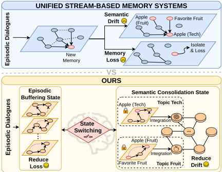
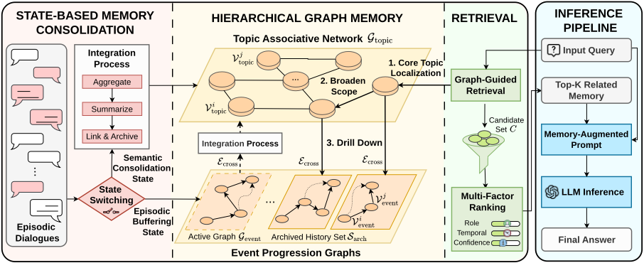
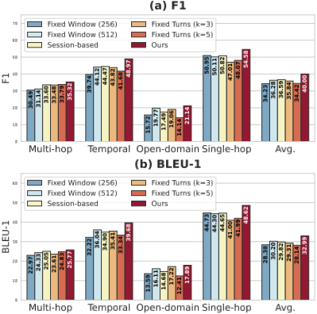
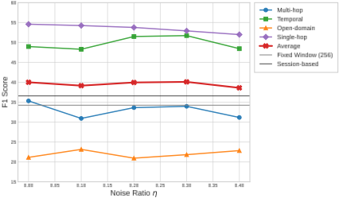
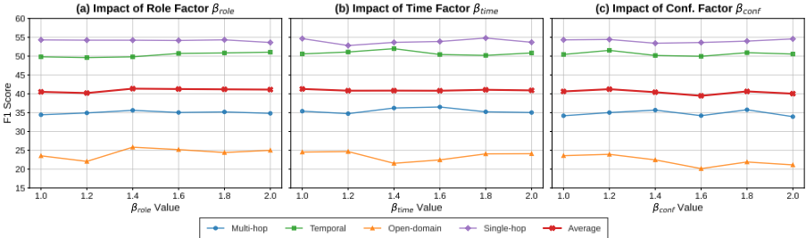
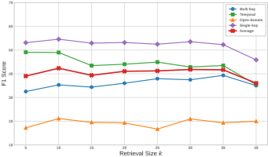

GAM：面向 LLM Agent 的分层图式 Agentic 记忆
LLM Agent 在长期交互中面临'快速感知新信息'与'稳定保留已有知识'的冲突：流式记忆直接在活跃记忆流上更新、缺乏写隔离，易受瞬时噪声污染产生 Memory Loss 与 Semantic Drift；离散结构化记忆稳定但更新僵化。论文提出 training-free 的分层图记忆框架 GAM，将记忆编码与巩固解耦：在线对话先写入局部 Event Progression Graph 做写隔离，仅当 LLM 判别器在稀疏维护事件中检测到话题边界时，才把缓冲子图以'摘要+原文'双粒度节点合并进全局 Topic Associative Network；检索时自顶向下遍历图结构，用 cross-encoder 语义概率乘以时间、置信度、角色三个调制因子重排。在 LoCoMo 与 LongDialQA 上，GAM 在多数设置下超过 Mem0、MemoryOS、A-Mem 等基线（Qwen2.5-7B 上 Temporal F1 超 Mem0 18%、LongDialQA 平均 F1 超 MemoryOS 86%），且 token 消耗最低（1,370/query，比 Mem0 低 11%），是团队构建长期记忆与检索层的直接设计参考。
让 LLM Agent 在长期交互中同时实现快速捕捉实时信息与稳定保留已有知识。现有统一流式记忆系统（MemGPT、MemoryOS、Mem0、A-Mem 等）直接在活跃记忆流上更新、缺乏写隔离，易产生 Memory Contamination、Memory Loss 与 Semantic Drift；离散结构化记忆架构（GraphRAG、StructRAG、LightRAG、G-Memory 等）虽稳定但索引构建昂贵、更新僵化，难以捕捉对话叙事的连续演化；AriGraph 依赖人工离散状态转换、Zep 只优化检索基础设施，均未从根本上解决编码与巩固的冲突。论文将记忆管理形式化为推理时在线决策过程，目标是在不微调模型参数的前提下最小化记忆更新的操作成本与长期干扰成本。
提出 GAM 分层图记忆框架，用 Semantic-Event-Triggered 状态机把记忆生命周期解耦为两个阶段：(1) Episodic Buffering 阶段：实时对话被构建为局部 Event Progression Graph（节点为原子交互单元，边为时序/因果演化），作为严格写隔离缓冲保护全局图；(2) Semantic Consolidation 阶段：LLM 判别器仅在稀疏维护事件（会话结束、交互停顿、2048 token 缓冲溢出）时检测话题边界，触发后将缓冲子图合并为带双粒度表示（LLM 摘要 c_sum + 原始文本拼接 c_raw）的语义节点，经'向量召回 top-5 候选 + LLM 语义打分（关系类型+置信度）'的粗到细策略接入全局 Topic Associative Network，并建立跨层证据链接 E_cross，原事件图归档。检索采用 Graph-Guided Multi-Factor 三段策略：主题层语义锚定与一阶邻居扩展 → 沿跨层边下钻到归档事件图 → cross-encoder 基础语义概率乘以时间（β_time=1.4）、置信度（β_conf=1.2）、角色（β_role=1.4）三个调制因子重排。整个框架 training-free，骨干均为现成 instruct 模型。
LoCoMo：Qwen2.5-7B 骨干下 Temporal F1 超过 Mem0 18% 以上；GPT-4o-mini 骨干下取得最高 Average F1 43.14
LongDialQA：Qwen2.5-7B 骨干下 Average F1 达 12.55，超过 MemoryOS 86%；Llama-3.2-3B 下取得最高 Average F1 7.36，说明结构化记忆可弥补小模型上下文容量不足
消融实验（LoCoMo，Qwen2.5-7B）：完整方法优于所有变体，去掉 Event Progression Graph（w/o EPG）退化最严重，验证叙事结构与编码/巩固解耦的必要性
话题划分策略对比：GAM 平均 F1 40.00，优于 Fixed Window 256（34.23）与 Session-based（36.59）；Temporal 任务从最佳基线 44.12 提升至 48.97
效率：平均 token 消耗最低（1,370/query），比 Mem0 降低 11%；在相近延迟下 F1 提升 13%，并显著优于 A-Mem 与 MemoryOS
鲁棒性：话题边界注入 40% 噪声（η=0.4）时 Average F1 仍达 38.60，高于 Fixed Window（34.23）与 Session-based（36.59）
与 AriGraph 在 LoCoMo 所有骨干上对比均胜出、Temporal 推理差距最大；MovieChat-1K 代理多模态实验中，以密集视频字幕为输入流时准确率与 F1 均优于长上下文直接输入基线
区别于统一流式记忆（MemGPT、MemoryOS、Mem0、A-Mem）在活跃流上直接更新、缺乏写隔离的做法，GAM 显式将记忆编码与巩固解耦，用语义边界触发的状态机保证全局记忆只在语义完整单元上更新；区别于 GraphRAG 等静态结构化记忆的僵化与高索引成本，GAM 用轻量事件图缓冲支持实时叙事演化；区别于 AriGraph 依赖人工离散状态定义、Zep 只做检索优化，GAM 从记忆生命周期层面处理编码与巩固的冲突。双粒度节点表示（摘要+原文）与融合时间/置信度/角色信号的图引导多因子检索，也是相对纯向量检索的差异化设计。
相关度级别：high
命中能力域：3.1 上下文工程与记忆
理由：论文核心正是 3.1 明确列出的'Agent 记忆系统'与'结构化上下文组织'：分层图记忆、写隔离缓冲、语义边界触发的巩固、跨层图检索，都是团队构建知识库问答、长期会话 Agent 时直接面对的上下文管理问题；其图引导多因子检索（cross-encoder + 时间/角色/置信度调制）对团队的 RAG/检索增强实践有直接借鉴价值。框架 training-free、可在 Llama-3.2-3B/Qwen2.5-7B 等小模型上运行且对小模型增益最大，契合团队'用好模型而非训练模型'的定位。论文不涉及工具调用、多智能体协作或提示优化，故不命中 3.2-3.4；其评测与效率分析是支撑性内容而非方法论贡献，故不命中 3.5。
建议动作：深入精读并做内部分享
arXiv:2604.12285v1 [cs.AI] 2026年4月14日
GAM：面向大语言模型（LLM）智能体的分层图结构智能体记忆
Zhaofen Wu 1 * 4 , 5
Hanrong Zhang 2 * † Fulin Lin 1 Wujiang Xu 3 Xinran Xu 1 Henry Peng Zou 2 Shaowen Chen 1 Weizhi Zhang 2 Xue Liu 4 , 5 2 1 †
Yankai Chen Philip S. Yu Hongwei Wang
1 2 3
浙江大学 伊利诺伊大学芝加哥分校 4 MBZUAI 5 麦吉尔大学 罗格斯大学
{zhaofen1.25, hongweiwang}@intl.zju.edu.cn, {hzhan135, psyu}@uic.edu
为了维持连贯的长期交互，大语言模型（LLM）智能体必须应对获取新信息与保留既有知识之间的张力。当前统一的基于流的记忆系统能够促进上下文更新，但仍易受瞬态噪声的干扰。相反，离散的结构化记忆架构能够提供稳健的知识保留能力，却往往难以适应不断演变的叙事。为解决这一问题，我们提出了 GAM——一种分层图结构智能体记忆（hierarchical Graph-based Agentic Memory）框架，它显式地将记忆编码与记忆巩固解耦，从而有效化解快速上下文感知与稳定知识保留之间的冲突。通过将进行中的对话隔离在事件演进图中，并仅在语义发生转变时才将其整合进主题关联网络，我们的方法在保持长期一致性的同时将干扰降至最低。此外，我们引入了一种图引导的多因素检索策略以提升上下文精确度。在 LoCoMo 和 LongDialQA 上的实验表明，我们的方法在推理准确率与效率两方面均持续优于最先进的基线方法。
Large Language Model (LLM) agents have demonstrated remarkable capabilities in natural language understanding, long-horizon complex reasoning, and question answering (Didolkar et al., 2024; Anwar et al., 2025; Ma et al., 2025; Zhang et al.,
* Equal contribution.
† Corresponding authors.
2026a,b, 2025b). However, enabling these agents to maintain coherent long-term interactions remains a significant challenge (Du et al., 2025; Yang et al., 2025a; Zou et al., 2026, 2025). A robust agentic memory must rapidly capture real-time interactions while safeguarding established knowledge from transient noise corruption (Tan et al., 2025; Su et al., 2026).
Existing architectures often struggle to resolve this conflict. Recent approaches typically maintain a continuous, linear flow of information to handle ongoing interactions (Zhong et al., 2024; Lee et al., 2024; Packer et al., 2024; Kang et al., 2025). We categorize these paradigms as Unified Streambased Memory Systems. As depicted in the upper part of Figure 1, these methods perform updates directly on the active memory stream. This continuous exposure introduces a high risk of Memory Contamination (Chen et al., 2025). Specifically, this continuous exposure leads to Memory Loss (Jia et al., 2025b). In this phenomenon, established nodes become structurally isolated and forgotten due to weak connectivity. Furthermore, it causes Semantic Drift (Yang et al., 2025b). This occurs when distinct topics are erroneously conflated, thereby distorting the agent's thematic consistency. Conversely, Discrete Structured Memory Architectures ensure stability by organizing information into rigid schemas (Zhang et al., 2025a; Edge et al., 2024). However, they often lack the agility to update narrative flows in real-time. This rigidity results in fragmented discourse representations. Consequently, they fail to capture the continuous evolution of long-term agent-user dialogues. While some recent studies attempt to address structural dynamism, they often rely on artificial discrete state changes or focus solely on retrieval optimization (Anokhin et al., 2024; Rasmussen et al., 2025). These methods fail to fundamentally resolve the conflict between immediate encoding and long-term consolidation. In contrast, our approach explicitly decouples these processes to ensure robustness.

当前基于 LLM 的 Agent 采用统一的流式范式以最大化交互可塑性 (Hu et al., 2026; Huang et al., 2026)。诸如 Generative Agents (Park et al., 2023) 等早期架构将观察记录在线性流中，依靠检索来重建上下文。为了管理无限的上下文窗口，MemGPT (Packer et al., 2024)、MemoryOS (Kang et al., 2025) 和 Mem0 (Chhikara et al., 2025) 等系统引入了受操作系统启发的分层结构，在工作上下文与外部存储之间换入换出信息。尽管这些方法擅长快速的信息编码，但它们缺乏写入隔离。新获取的以及含噪声的信息会被直接追加或合并到长期存储中。这种“开闸”（open-gate）策略使它们容易受到记忆污染（Memory Contamination）(Chen et al., 2025) 的影响，即持续更新导致语义漂移 (Yang et al., 2025a) 或记忆丢失。即使是 A-Mem (Xu et al., 2025) 这类先进的自反思 Agent，也是基于任意的 token 计数或时间步而非语义完整性来触发更新，因而无法防止稳定知识被瞬态对话状态所破坏。

相比之下，离散结构化记忆架构（Discrete Structured Memory Architectures）通过刚性的知识表示来优先保证稳定性。GraphRAG (Edge et al., 2024) 和 StructRAG (Jia et al., 2025a) 等系统构建静态知识图谱，以支持精确的多跳推理 (Li et al., 2025)。LightRAG (Guo et al., 2024) 和 G-Memory (Zhang et al., 2025a) 等方法则通过对双层图结构进行索引以实现复杂实体检索，进一步增强了这一能力。然而，这些架构往往存在僵化与延迟问题。传统知识图谱所需的昂贵索引构建过程，使其难以适应开放域对话中流动的叙事过程 (Ma et al., 2025)。因此，它们往往产生碎片化的语篇表示，这类表示擅长静态事实检索，却难以实时捕捉用户状态的持续演变或子话题的细微差别。
近期研究尝试通过向结构化记忆引入动态元素，来弥合稳定性与可塑性之间的鸿沟。Ari-Graph (Anokhin et al., 2024) 引入情景节点以追踪不断变化的状态，但该方法专为具有离散状态转移的文本游戏而设计，而这类离散转移在自然对话的模糊边界中很少出现。类似地，Zep (Rasmussen et al., 2025) 通过专注于优化检索基础设施来应对动态性问题，而非解决编码与巩固之间的认知冲突。与这些依赖人工状态定义或纯检索层面优化的方法不同，我们的框架显式地将记忆生命周期解耦，确保全局记忆仅通过经过巩固且语义完整的单元进行更新。
我们将记忆管理形式化为一个推理时（inference-time）的在线决策过程，该过程在即时可访问性与长期干扰之间进行权衡。设对话序列 D = { u 1 , . . . , u t } 由层次化记忆图 H t 维护。GAM 并不优化模型参数，而是寻求一种策略，在保持检索质量的同时，最小化更新记忆的累积运行成本。为简洁起见，令 C ( t ) enc 表示运行成本 C enc ( u t , H t )，令 C ( t ) inter 表示期望干扰成本 C inter ( G ( t ) topic , G ( t ) event )。
在下文介绍的具体架构中，局部角色由事件演进图（Event Progression Graph）G event 实例化，而长期全局角色由主题关联网络（Topic Associative Network）G topic 实例化。
由于在线精确评估未来干扰是难以处理的，我们通过语义分歧指示器 b t ∈ { 0 , 1 } 来近似式 1 中的策略；当累积的局部上下文已从全局状态漂移得足够远、从而有必要进行巩固时，该指示器便会发出信号：
其中 b t = 1 表示需要进行巩固的结构性转变。因此，我们的目标并非精确求解式 1，而是将 b t 用作一种低成本的策略触发器，在不牺牲快速在线更新的前提下降低长期干扰项。
为解决这一优化冲突，我们提出了 GAM 框架。该框架在层次化图架构中采用基于状态的巩固机制，从结构上分离记忆生命周期。如图 2 所示，我们的系统通过三个协同阶段满足上述目标：(1) 情景缓冲阶段（Episodic Buffering Phase）。为优化感知，我们将正在进行的对话隔离在局部事件演进图 G event 中，其结构定义见 3.2 节。当系统运行于 3.3 节所述的情景缓冲状态（Episodic Buffering State）时，这一屏蔽机制可保护全局存储免受临时噪声的影响。(2) 语义巩固阶段（Semantic Consolidation Phase）。一旦检测到语义指示器 b t，系统便触发原子更新以确保稳定性。如 3.3 节所述，仅当叙事单元在语义上完整时，缓冲数据才会被总结并合并到全局主题关联网络 G topic 中。(3) 图引导检索（Graph-Guided Retrieval）。为在推理过程中桥接这些相互分离的层，我们采用 3.4 节中详述的多因子遍历策略。该过程整合时间信号与置信度分数，从而从局部细节与全局主题中实现精确的上下文恢复。GAM 的详细端到端执行流程见附录 A 中的算法 1。
为实现 3.1 节所述的结构分离，我们将时变记忆结构 H t 定义为一个复合图。该架构将已整合知识的存储与临时上下文缓冲区及历史档案分离开来。我们将其形式化定义为：
其中，S ( t ) arch 表示已完成整合的归档事件图集合，而 G ( t ) event 表示活动缓冲区。这一分解使公式 1 中的抽象角色变得明确：G event 实现了用于快速感知的瞬态局部状态，G topic 实现了稳定的全局基底，而 S arch 与 E cross 则为后续检索保留了有事实依据的证据。为简洁起见，在描述静态结构时我们省略时间下标 t。
整合后的知识被表示为主题关联网络（Topic Associative Network），它作为长期留存的基础。其结构定义为：
在该层中，节点 V topic 表示源自历史交互的高层语义簇或抽象主题。边 E topic 刻画它们之间深层的语义关联。为捕捉启发式度量可能遗漏的细微依赖关系，我们通过基于大语言模型的语义评分器来量化这些边的权重。该过程使用附录 E.1 中详述的提示词。尽管计算开销较大，这一精确计算仅在整合阶段执行。这一时机安排确保了 G topic 的结构精度得以实现，同时不损害系统的交互能力。
与此同时，临时上下文被维护在活动的事件演进图（Event Progression Graph）中，该结构针对快速更新进行了优化。其结构定义如下：
其中，节点 V event 对应于实时捕获的原子交互单元，例如用户话语或系统响应。边 E event 对当前对话流的时间与因果演化进行建模。与全局层不同，该结构专为快速追加操作而设计，从而将编码延迟 C enc 降至最低。
最后，我们建立跨层关联 E cross，以弥合情节细节与语义主题之间的鸿沟。这些关联充当一种索引，将全局图中的主题节点连接到 S arch 内事件图的归档快照。这一结构使检索机制能够访问与某一主题相关联的确切历史证据，而无需依赖易失的活动缓冲区。
我们的系统将叙事动态性建模为一个有限状态机，该状态机基于语义进展在两个不同的状态之间进行转换。
语义边界检测的实现。为了实现式 2 中定义的理论边界条件，我们需要一种机制来精确检测语义分歧何时超过容差 ϵ。由于显式计算高维距离 ∆ 在计算上代价高昂且对词汇噪声敏感，我们将检测功能实现为一个由 LLM M θ 驱动的语义判别任务。
在这一框架中，LLM 充当阈值函数的神经代理。系统维护一个容量固定的情节缓冲区 B t，其上限为 2048 个 token，该缓冲区由当前事件演进图 G event 的线性化内容导出。关键在于，判别器并非在每一轮都被查询，而是仅由稀疏的维护事件触发，例如会话结束标记、自然的交互停顿或缓冲区溢出。该过程使用附录 E.3 中定义的结构化指令提示。因此，在实践中，ϵ 并不会被实例化为一个刚性的数值化图距离阈值；语义判别提示的指令严格程度充当了 ϵ 的启发式代理。b t 等于 1 的阳性检测结果表明语义距离已突破稳定性阈值，并触发向语义巩固状态的转换。如果在缓冲区达到容量之前未观察到任何稀疏触发，溢出将强制执行一次巩固检查，而语义相关的被切分片段随后可以通过强主题级边重新连接起来。
情节缓冲状态。在该状态下，系统专注于捕获正在进行的对话的细节。输入的话语被构建为原子事件单元 e t，并通过更新局部图的节点集和边集将其追加到图中：
其中 E ( t ) temp 表示将新事件与紧邻上下文相连接的顺序边。该状态充当一个严格的写隔离缓冲区。通过将高频更新限制在这一局部范围内，我们保护全局主题关联网络 G topic 免受临时噪声的影响。这一机制有效地将新信息的获取与长期记忆的修改分离开来。这种分离缓解了式 2 中所述的污染风险。
语义巩固状态。当检测到 b t 等于 1 的主题边界时，系统转换到该状态以巩固已完成的叙事单元。该过程执行一次图合并操作，将已缓冲的子图 G event 转换为一个经巩固的语义节点 v new。为了应对抽象推理与细节回忆之间的权衡问题，我们将 v new 设计为具有双粒度的表示：
其中，c sum 是通过向 LLM 提示附录 E.2 中详述的指令、令其总结事件图的语义内容而生成的。该摘要支持高层次的主题推理。与此同时，c raw 则通过拼接缓冲区内所有事件节点的原始文本内容而构建。该组件保留了细粒度的细节，防止在摘要过程中出现信息丢失。
随后，系统通过建立语义边将 v new 集成到全局网络 G topic 中。为避免对每个主题节点进行代价高昂的全图推理，我们采用一种由粗到细的候选选择策略。摘要 c sum 首先利用向量相似度检索 top5 个最近的主题节点，且仅将这一紧凑的候选集合传递给 3.2 节中介绍的基于 LLM 的语义评分器。利用附录 E.1 中详述的指令提示，我们将 v new 的摘要与每个候选主题节点配对，向模型查询具体的关系类型和置信度分数。当该置信度分数超过语义阈值 τ 时，便建立新边 E new。这一由粗到细的流程在避免 O ( N ) 的全图评分的同时，保留了基于 LLM 的关系建模的逻辑精确性。全局拓扑更新如下：
集成完成后，当前的事件图结构会被归档到集合 S ( t ) arch 中，并通过创建跨层边 E cross 作为有据可依的证据与 v new 永久链接。随后，系统将活动局部缓冲区 G event 重置为空状态，并回到情节缓冲状态（Episodic Buffering State），以处理后续的叙事单元。
虽然双阶段架构通过显式分离存储来促进稳定性，但有效的交互需要对记忆系统形成统一的视图。我们提出了一种图引导的检索机制，作为遍历该层次结构的逻辑桥梁。该方法通过整合来自相互分离的各存储层的信号，旨在检索语义上深入且时间上精确的上下文。
与扁平向量检索不同，我们的流程以自顶向下、先扩展后下钻（expand-and-drill）的方式利用 H t 的拓扑结构。检索过程分为三个阶段进行：
语义锚定与扩展（Semantic Anchoring and Expansion）。首先，系统通过向量相似度在主题关联网络（Topic Associative Network）G topic 中识别出最相关的语义锚点 V top。为了捕获直接词汇匹配之外的潜在依赖关系，我们利用全局图结构来扩展搜索范围。具体而言，我们将 topk 个节点的一阶邻居纳入其中，并利用语义边 E topic 引入上下文相关的主题。最终的语义锚点集合 V anchor 定义如下：
结构化下钻（Structural Drill-Down）。系统从这些扩展后的锚点出发，遍历跨层链接 E cross，以访问存储在归档集合 S arch 中的特定已归档事件演进图（Event Progression Graphs）。这些已归档的图构成了主题节点的原始来源。形式上，我们通过聚合与锚点集合中任意节点相链接的归档图中的所有事件节点来定义候选集合 C：
其中 V ( G ′ ) 表示已归档图 G ′ 的节点集合。该策略确保 Agent 访问与查询所需的直接及潜在宏观级主题严格对齐的精确情节细节。
多因素重排序（Multi-Factor Re-ranking）。为了对 C 中的多样化候选进行排序，我们采用了一种将深度语义推理与显式上下文信号相结合的重排序策略。给定用户查询 q，我们首先使用交叉编码器（cross-encoder）模型为每个记忆单元 v 计算基础语义概率 P sem ( v | q )。该模型能够捕获双编码器（bi-encoder）可能遗漏的细微语义依赖关系。为了进一步保证与查询约束的一致性，我们应用了如下定义的乘性信号调制机制：
其中 K = { time , conf , role } 索引了调制因子的集合。基础概率由提升因子 β k > 1 进行调制，这些提升因子由指示函数 I k ( v, q ) ∈ { 0 , 1 } 激活。具体而言，我们引入三种实用约束来细化检索范围。第一，时间因子 β time 在记忆包含与时间敏感查询相关的时间表达式时被激活，从而提升时序精确性。第二，内在置信度因子 β conf 优先考虑在其编码阶段成功通过自一致性验证的信息。最后，为应对多方交互的复杂性，我们引入了以角色为中心的情境化因子 β role。该因子通过验证记忆来源是否与查询所隐含的目标对话者相一致，帮助理清相互混杂的叙事线索。
这种乘法形式的公式确保了仅匹配关键词而缺乏语义相关性的候选不会被错误地提升，因为它们的基础语义概率仍然较低。我们对这些提升因子 β 在 1.0 至 2.0 的范围内进行了敏感性分析，以评估系统的鲁棒性。如附录 D.1 中所详述，我们的框架在较宽的超参数范围内保持了性能。这一结果表明，结构化先验的整合与语义匹配相辅相成，共同提升了检索质量。
数据集。我们在两个面向长期交互的基准测试（benchmark）上进行评估。LoCoMo（Maharana et al., 2024）包含横跨五个推理类别的长篇开放域对话。遵循 MemoryOS（Kang et al., 2025）与 Mem0（Chhikara et al., 2025）的做法，我们聚焦于前四个类别以评估稳定性。LongDialQA（Kim et al., 2024）改编自《The Big Bang Theory》、《Friends》和《The Office》等电视剧剧本，模拟多方交互，以在对抗性设置下严格评估上下文保留能力。
基线。我们在三种代表性范式下比较了多种不同的架构。首先，MemoryBank（Zhong et al., 2024）和 ReadAgent（Lee et al., 2024）等启发式方法依赖于被动遗忘曲线或要旨压缩。其次，我们对统一的基于流的系统进行基准测试，其中包括受操作系统（OS）启发的模型，如 MemGPT（Packer et al., 2024）和 MemoryOS（Kang et al., 2025），以及工业界标准 Mem0（Chhikara et al., 2025）。最后，我们纳入了自进化 Agent A-Mem（Xu et al., 2025），以评估近期的自反思更新机制。为了将 GAM 与显式世界模型图记忆进行定位比较，我们在附录 B.3 中提供了与 AriGraph 的单独对比。
指标与实现。我们采用 F1 Score 来衡量实体捕获，采用 BLEU-1 来衡量词汇准确性。系统通过 PyTorch 和 HuggingFace 实现，并利用 Ollama 和 LiteLLM 进行高效推理。我们在不同规模的模型上评估性能，包括 Llama-3.23B-Instruct、Qwen2.5-7B-Instruct、Qwen2.5-14BInstruct 和 GPT-4o-mini。所有骨干大语言模型（LLM）均作为现成的指令微调模型使用，而 GAM 本身是一个免训练的记忆框架，无需对骨干参数进行任何额外的微调。该架构使用 all-MiniLM-L6v2 句子嵌入进行索引，并使用 crossencoder/ms-marco-MiniLM-L-6-v2 进行重排序。基于附录 D.2 中详述的敏感性分析，我们将检索大小 k 设为 10。调制因子设为 β_time = 1.4、β_role = 1.4 和 β_conf = 1.2，这些取值选自附录 D.1 中的稳定区域，而非激进的逐数据集调优。在实现中，角色指示器由轻量级说话人匹配触发，而时间与置信度线索则通过轻量级提示进行推断。所有实验均在 NVIDIA RTX 4090 GPU 上进行。
LoCoMo 上的性能。表 1 展示了在四种 LLM 骨干模型上的对比结果，我们的框架在大多数设置中取得了最佳平均性能。我们的方法在复杂推理任务中尤为有效。例如，在 Qwen 2.5-7B 骨干模型上，我们在 Temporal F1 分数上超越强大的商业基线 Mem0（Chhikara et al., 2025）超过 18%。即使在基线表现强劲的更大模型 GPT-4o-mini 上，我们的方法仍保持最高的 Average F1 分数 43.14，这展示了卓越的全局一致性。这些增益表明，与纯检索优化的系统相比，我们的双阶段架构为长期记忆提供了更稳健的结构基础。我们注意到两个具有启发性的例外。首先，Mem0 在 GPT-4o-mini 上的 Temporal F1 仍然更强（56.42 对 51.96），这表明当骨干模型本身已具备强大的时序推理能力和大上下文利用率时，直接检索原始记录可以保留精确的时间顺序线索，而 GAM 在整合过程中可能会部分压缩这些线索。其次，Open-Domain 始终是 GAM 最困难的类别，因为这些问题定位性弱、受时间或角色线索的约束较少，使得广泛的主题覆盖比有利于聚焦推理任务的结构化剪枝更为重要。
LongDialQA 上的性能。如表 2 所示，GAM 在复杂的多方叙事中始终优于所有基线。最值得注意的是，在较小的 Qwen 2.5-7B 模型上，它取得了 12.55 的 Average F1，超越 MemoryOS（Kang et al., 2025）达 86%。这表明我们的结构化记忆有效弥补了较小模型有限的上下文容量。附录 B.1 中的进一步分析证实这一优势在所有子数据集上均成立，表明我们的语义-事件触发（Semantic-Event-Triggered）机制成功缓解了频繁说话人切换带来的干扰。
为了验证各组件的贡献，我们在 LoCoMo 数据集上使用 Qwen2.5-7B 进行了消融实验，分别移除主题关联网络（Topic Associative Network，w/o TAN）、事件演进图（Event Progression Graph，w/o EPG）、语义-事件触发状态切换机制（Semantic-Event-Triggered State Switching Mechanism，w/o SSM）以及多因子检索（MultiFactor Retrieval，w/o MFR）。
| Method.Method | Multi-Hop.F1 | Multi-Hop.BLEU-1 | Temporal.F1 | Temporal.BLEU-1 | Open-Domain.F1 | Open-Domain.BLEU-1 | Single-Hop.F1 | Single-Hop.BLEU-1 | Avg.F1 | Avg.BLEU-1 |
|---|---|---|---|---|---|---|---|---|---|---|
| ReadAgent | 2.05 | 1.96 | 4.33 | 4.33 | 7.53 | 6.39 | 3.52 | 2.75 | 4.36 | 3.86 |
| Memorybank | 7.35 | 5.34 | 3.9 | 3.41 | 4.91 | 5.42 | 8.76 | 7.04 | 6.23 | 5.3 |
| Memgpt | 7.59 | 5.09 | 3.25 | 3.15 | 5.74 | 5.55 | 7.91 | 6.64 | 6.12 | 5.11 |
| Llama 3.2-3B A-Mem | 17.44 | 11.74 | 26.38 | 19.5 | 12.53 | 11.83 | 28.14 | 23.87 | 21.12 | 16.73 |
| MemoryOS | 21.03 | 13.75 | 19.38 | 13.73 | 11.46 | 8.58 | 28.25 | 20.03 | 20.03 | 14.02 |
| Mem0 | 27.51 | 18.51 | 30.08 | 20.73 | 21.33 | 15 | 41.52 | 30.89 | 30.11 | 21.28 |
| Ours | 28.74 | 22.35 | 46.12 | 37.24 | 21.18 | 18.33 | 49.02 | 42.18 | 36.27 | 30.02 |
| ReadAgent | 5.37 | 4.02 | 2.82 | 2.74 | 5.86 | 4.78 | 5.23 | 4.13 | 4.82 | 3.92 |
| Memorybank | 6.22 | 5.39 | 2.58 | 2.27 | 8.53 | 7.58 | 6.17 | 4.87 | 5.88 | 5.03 |
| Memgpt | 6.17 | 4.97 | 2.18 | 2.77 | 6.33 | 5.93 | 8.95 | 7.33 | 5.91 | 5.25 |
| Qwen 2.5-7B A-Mem | 21.85 | 13.4 | 27.54 | 22.49 | 14.16 | 13.06 | 33.25 | 29 | 24.2 | 19.49 |
| MemoryOS | 29.37 | 21.4 | 28.96 | 20.69 | 20.22 | 16.12 | 36.89 | 30.81 | 28.86 | 22.25 |
| Mem0 | 32.86 | 23.99 | 41.22 | 32.22 | 18.24 | 15.63 | 49.21 | 42.83 | 35.38 | 28.67 |
| Ours | 35.32 | 25.77 | 48.97 | 39.68 | 21.14 | 17.89 | 54.58 | 48.62 | 40 | 32.99 |
| ReadAgent | 4.33 | 2.99 | 2.66 | 2.71 | 4.93 | 5.53 | 5.16 | 4.05 | 4.27 | 3.82 |
| Memorybank | 3.65 | 3.16 | 2.59 | 2.33 | 7.33 | 7.45 | 4.71 | 3.72 | 4.57 | 4.17 |
| Memgpt | 8.37 | 5.42 | 4.05 | 3.64 | 11.81 | 11.52 | 11.7 | 9.79 | 8.98 | 7.59 |
| Qwen 2.5-14B A-Mem | 26.55 | 16.56 | 28.3 | 23.02 | 16.74 | 14.89 | 36.95 | 32.58 | 27.14 | 21.76 |
| MemoryOS | 27.46 | 19.14 | 23.38 | 16.8 | 19.27 | 14.96 | 26.31 | 21.92 | 24.11 | 18.2 |
| Mem0 | 31.45 | 24.59 | 50.2 | 39.85 | 17.66 | 14.43 | 49.85 | 43.78 | 37.29 | 30.66 |
| Ours | 33.32 | 25.38 | 50.25 | 39.33 | 20.4 | 18.5 | 57.55 | 50.99 | 40.38 | 33.55 |
| ReadAgent | 9.15 | 6.48 | 12.6 | 8.87 | 5.31 | 5.12 | 9.67 | 7.66 | 9.18 | 7.03 |
| Memorybank | 5 | 4.77 | 9.68 | 6.99 | 5.56 | 5.94 | 6.61 | 5.16 | 6.71 | 5.71 |
| Memgpt | 26.65 | 17.72 | 25.52 | 19.44 | 9.15 | 7.44 | 41.04 | 34.34 | 25.59 | 19.73 |
| GPT-4o-mini A-Mem | 27.02 | 20.09 | 45.85 | 36.67 | 12.14 | 12 | 44.65 | 37.06 | 32.41 | 26.45 |
| MemoryOS | 35.27 | 25.22 | 41.15 | 30.76 | 20.02 | 16.52 | 48.62 | 42.99 | 36.27 | 28.87 |
| Mem0 | 32.78 | 20.87 | 56.42 | 45.89 | 20.45 | 15.82 | 51.81 | 43.23 | 40.37 | 31.45 |
| Ours | 35.88 | 27.96 | 51.96 | 42.26 | 28.12 | 24.51 | 56.58 | 51.18 | 43.14 | 36.48 |
| Method.Method | Multi-Hop.F1 | Multi-Hop.BLEU-1 | Temporal.F1 | Temporal.BLEU-1 | Open-Domain.F1 | Open-Domain.BLEU-1 | Single-Hop.F1 | Single-Hop.BLEU-1 | Avg.F1 | Avg.BLEU-1 |
表 3 给出的平均结果显示，我们的完整方法始终优于所有变体。所有任务类别的详细性能分解见附录 B.2。w/o EPG 变体的性能下降最为严重，这表明叙事结构对于时间顺序鲁棒性至关重要。w/o SSM 的下降凸显了将编码与巩固解耦以防止污染的必要性。最后，w/o TAN 和 w/o MFR 的下降验证了高层主题组织和多信号融合对于跨会话推理和精确检索不可或缺。
为验证记忆巩固与语义完整边界对齐的必要性，我们将语义事件触发（Semantic-Event-Triggered）机制与三种启发式策略进行对比：(1) 固定窗口（256 / 512 token），(2) 固定轮次（k ∈ { 3 , 5 }），以及 (3) 基于会话的划分。如图 3 所示，我们的方法取得了最高的平均 F1 值 40.00，而固定窗口（256）表现最差，仅为 34.23。这证实了任意的硬性切分会割裂上下文，并切断对推理至关重要的逻辑流（Logical Flow）边。这一优势在时序（Temporal）任务上最为显著，我们的方法将最佳基线成绩从 44.12 提升至 48.97。此外，我们的方法还超过了强大的基于会话的基线（36.59），表明动态状态切换能够捕捉单个会话内更细微的语义变化，而粗粒度的会话存储则会遗漏这些细微差别。附录 C.3 进一步表明，在 40% 的分割噪声下，GAM 仍保持稳定，并且依然优于固定窗口基线。
我们通过分析平均 token 消耗和推理延迟，评估了不同记忆框架的计算效率。如表 4 所示，我们的方法实现了最低的 token 消耗（1,370/查询），与 Mem0 相比降低了 11% 的成本。尽管 Mem0 的延迟略低，但我们的方法在相近速度下取得了 13% 的 F1 提升，从而获得了更优的权衡，同时在两项指标上均显著优于 A-Mem 和 MemoryOS。
| Model. | Method. | Avg.F1 | Avg.BLEU-1 |
|---|---|---|---|
| Llama 3.2-3B | ReadAgent | 3.97 | 4.04 |
| Llama 3.2-3B | Memorybank | 3.93 | 3.6 |
| Llama 3.2-3B | Memgpt | 3.9 | 3.36 |
| Llama 3.2-3B | A-Mem | 4.11 | 3.27 |
| Llama 3.2-3B | MemoryOS | 5.85 | 4.46 |
| Llama 3.2-3B | Mem0 | 6.85 | 5.75 |
| Llama 3.2-3B | Ours | 7.36 | 6.85 |
| Qwen 2.5-7B | ReadAgent | 6.41 | 6.35 |
| Qwen 2.5-7B | Memorybank | 7.22 | 7.05 |
| Qwen 2.5-7B | Memgpt | 4.94 | 4.43 |
| Qwen 2.5-7B | A-Mem | 5.49 | 5.79 |
| Qwen 2.5-7B | MemoryOS | 6.76 | 5.11 |
| Qwen 2.5-7B | Mem0 | 10.27 | 9.91 |
| Qwen 2.5-7B | Ours | 12.55 | 12.43 |
| Qwen 2.5-14B | ReadAgent | 8.71 | 8.85 |
| Qwen 2.5-14B | Memorybank | 9.86 | 10.24 |
| Qwen 2.5-14B | Memgpt | 5.83 | 5.81 |
| Qwen 2.5-14B | A-Mem | 8.53 | 7.93 |
| Qwen 2.5-14B | MemoryOS | 9.07 | 8.39 |
| Qwen 2.5-14B | Mem0 | 11.48 | 10.94 |
| Qwen 2.5-14B | Ours | 11.86 | 11.66 |
| GPT-4o-mini | ReadAgent | 4.5 | 3.16 |
| GPT-4o-mini | Memorybank | 5.95 | 6.06 |
| GPT-4o-mini | Memgpt | 3.87 | 3.28 |
| GPT-4o-mini | A-Mem | 6.49 | 5.97 |
| GPT-4o-mini | MemoryOS | 10.61 | 9.31 |
| GPT-4o-mini | Mem0 | 10.9 | 9.84 |
| GPT-4o-mini | Ours | 11.18 | 10.14 |
| Model. | Method. | Avg.F1 | Avg.BLEU-1 |

| Method. | Avg.F1 | Avg.B-1 |
|---|---|---|
| w/o TAN | 35.07 | 29 |
| w/o MFR | 35.94 | 29.28 |
| w/o SSM | 32.58 | 26.13 |
| w/o EPG | 25.06 | 20.76 |
| Ours | 40 | 32.99 |
| Method. | Avg.F1 | Avg.B-1 |
| Method | Tokens/Q | Time (s) | F1 |
|---|---|---|---|
| A-Mem | 4221.12 | 2.21 | 24.2 |
| MemoryOS | 3400.41 | 154.22 | 28.86 |
| Mem0 | 1533.94 | 0.51 | 35.38 |
| Ours | 1370.18 | 0.8 | 40 |
| Method | Tokens/Q | Time (s) | F1 |
In this paper, we proposed GAM, a hierarchical graph-based agentic memory framework that mitigates the conflict between rapid context perception and stable knowledge retention. By decoupling narrative buffering from semantic consolidation through state-based switching, GAM updates memory only at semantically complete boundaries, isolating transient noise. Combined with graphguided retrieval that fuses temporal, confidence, and role-centric signals, GAM achieves superior reasoning accuracy and efficiency over strong baselines. In the future, we plan to extend the current text-based memory into a native multimodal memory framework to support richer long-term reasoning over textual, visual, and auditory signals.
尽管我们在 LoCoMo 和 LongDialQA 上的实验验证了所提出架构的有效性，但 GAM 当前的实例化仅限于文本模态。这种单模态设计限制了系统利用真实世界交互中常见的丰富非语言信息（如视觉上下文或声学线索）的能力。因此，模型无法对视觉或听觉输入进行细粒度推理。原生的多模态扩展将用多模态节点取代纯文本的记忆表示，这些节点将符号摘要与模态特定特征（如关键帧或音频表示）相结合。随后，同样的状态切换机制便可以从视觉或声学信号中检测语义变化，而不仅仅是词汇层面的主题变化。我们将这一扩展留待未来工作，且不声称当前系统具备原生多模态推理能力。
面向对话智能体的持久记忆系统引发了值得重视的隐私与安全问题。首先，用户可能透露敏感的个人信息，而这些信息不应自动进入长期存储。GAM 本身并不能解决这一问题，但其基于状态的整合设计提供了一个天然的干预点：在缓冲内容写入全局主题图之前，隐私过滤器或用户自定义的保留规则可以对其进行检查并拦截敏感内容。
其次，长期记忆系统应当支持用户对所存储内容的控制。由于 GAM 将记忆组织为显式的图节点和跨层链接，而非仅仅是不透明的向量状态，它为检查、选择性删除、冻结或分支级剪枝提供了更清晰的基础。这并不能保证已部署的系统一定会提供此类控制功能，但在架构上使其更易于实现。
第三，携带记忆的智能体可能因错误的摘要生成或不正确的语义链接而形成对用户的不准确信念。在基于图的记忆中，此类错误原则上可以通过删除虚假边、调整置信度权重或删除错误的主题节点来在局部加以修正，而无需重新训练整个主干模型。我们将这些可供性视为有用的安全原语，而非完整的解决方案；稳健的部署仍需要精心的界面设计、审计以及用户同意机制。
为完整起见，我们在下面总结 GAM 的在线维护与推理工作流程。
为提高可复现性，我们在此总结语义边界检测器（semantic boundary detector）所使用的运行触发逻辑。GAM 并非对每一条传入的对话轮次都进行扫描，而是维护一个有界的情景缓冲区，并且仅在发生稀疏的维护事件时才调用判别器（discriminator）。
巩固阶段不会将新的语义节点与每一个现有的主题节点进行评分。相反，GAM 先通过向量检索缩小候选集，然后仅对一个小型候选池应用基于 LLM 的关系评分。
Table 5 presents the comprehensive performance breakdown on the LongDialQA benchmark across three distinct sub-datasets: The Big Bang Theory, Algorithm 1 The GAM Execution Flow: Memory Maintenance and Retrieval Require: Dialogue stream D = { u 1 , . . . } , Query
Ensure: Response to q , Updated Memory H t
Algorithm 2 Event-Driven Semantic Boundary Detection
Require: Incoming turn u t , token limit T max = 2048
Friends, and The Office. These datasets represent highly complex multi-party environments with frequent speaker switching and interleaved plotlines.
| Model.Model | Method.Method | Big Bang Theory.F1 | Big Bang Theory.B-1 | Friends.F1 | Friends.B-1 | The Office.F1 | The Office.B-1 | Avg.F1 | Avg.B-1 |
|---|---|---|---|---|---|---|---|---|---|
| ReadAgent | 5.19 | 4.70 | 3.49 | 4.24 | 3.24 | 3.18 | 3.97 | 4.04 | |
| Memorybank | 4.77 | 4.46 | 4.14 | 3.77 | 2.87 | 2.56 | 3.93 | 3.6 | |
| Memgpt | 3.94 | 2.97 | 3.99 | 3.85 | 3.77 | 3.25 | 3.9 | 3.36 | |
| Llama 3.2-3B A-Mem | 5.69 | 4.20 | 3.79 | 3.32 | 2.86 | 2.29 | 4.11 | 3.27 | |
| MemoryOS | 8.65 | 6.46 | 2.98 | 3.56 | 5.92 | 3.35 | 5.85 | 4.46 | |
| Mem0 | 10.84 | 6.63 | 3.5 | 5.37 | 6.2 | 5.25 | 6.85 | 5.75 | |
| Ours | 9.42 | 8.85 | 4.83 | 5.7 | 7.82 | 5.99 | 7.36 | 6.85 | |
| ReadAgent | 11.67 | 11.40 | 2.74 | 3.18 | 4.83 | 4.46 | 6.41 | 6.35 | |
| Memorybank | 9.11 | 9.15 | 7.29 | 7.81 | 5.27 | 4.18 | 7.22 | 7.05 | |
| Memgpt | 6.22 | 5.87 | 5.23 | 4.36 | 3.37 | 3.05 | 4.94 | 4.43 | |
| Qwen 2.5-7B A-Mem | 7.93 | 8.09 | 4.85 | 5.87 | 3.68 | 3.42 | 5.49 | 5.79 | |
| MemoryOS | 9.71 | 8.48 | 5.71 | 3.2 | 4.86 | 3.64 | 6.76 | 5.11 | |
| Mem0 | 15.01 | 14.97 | 6.69 | 6.14 | 9.11 | 8.63 | 10.27 | 9.91 | |
| Ours | 18.73 | 18.35 | 7.32 | 8.22 | 11.6 | 10.72 | 12.55 | 12.43 | |
| ReadAgent | 13.85 | 13.79 | 7.11 | 7.71 | 5.18 | 5.05 | 8.71 | 8.85 | |
| Memorybank | 17.58 | 17.56 | 4.6 | 6.03 | 7.41 | 7.12 | 9.86 | 10.24 | |
| Memgpt | 8.99 | 8.87 | 3.91 | 4.14 | 4.6 | 4.43 | 5.83 | 5.81 | |
| Qwen 2.5-14B A-Mem | 14.88 | 14.04 | 6.48 | 5.78 | 4.23 | 3.98 | 8.53 | 7.93 | |
| MemoryOS | 16.36 | 15.70 | 6.38 | 5.91 | 4.48 | 3.56 | 9.07 | 8.39 | |
| Mem0 | 18.32 | 17.58 | 7.22 | 7.68 | 8.9 | 7.57 | 11.48 | 10.94 | |
| Ours | 18.13 | 17.73 | 7.36 | 8.03 | 10.1 | 9.22 | 11.86 | 11.66 | |
| ReadAgent | 6.65 | 5.89 | 3.12 | 1.18 | 3.73 | 2.4 | 4.5 | 3.16 | |
| Memorybank | 7.98 | 8.21 | 6.41 | 7.42 | 3.46 | 2.54 | 5.95 | 6.06 | |
| Memgpt | 1.83 | 2.29 | 4.52 | 2.75 | 3.87 | 3.28 | |||
| GPT-4o-mini | 5.27 6.22 | 4.80 5.60 | 6.8 | 7.29 | 6.44 | 5.01 | 6.49 | 5.97 | |
| A-Mem MemoryOS | 13.36 | 11.63 | 9.56 | 8.16 | 8.92 | 8.13 | 10.61 | 9.31 | |
| Mem0 | 13.73 | 12.77 | 9.42 | 8.28 | 9.54 | 8.46 | 10.9 | 9.84 | |
| Ours | 14.70 | 13.70 | 9.64 | 8.34 | 9.21 | 8.39 | 11.18 | 10.14 |
| Model.Model | Method.Method | Big Bang Theory.F1 | Big Bang Theory.B-1 | Friends.F1 | Friends.B-1 | The Office.F1 | The Office.B-1 | Avg.F1 | Avg.B-1 |
Our framework demonstrates consistent superiority over state-of-the-art baselines across most configurations. Specifically, on the Friends and The Office sub-datasets, which are characterized by nuanced interpersonal dynamics and long-term character arcs, our method achieves significantly higher F1 scores compared to the strong commercial baseline Mem0. For instance, using the Qwen 2.5-7B backbone, our approach surpasses Mem0 by a notable margin on the The Office subset (11.60 vs 9.11). This indicates that the proposed RoleCentric Contextualization factor effectively disentangles narrative threads in dense multi-speaker scenarios, preventing the confusion often observed in OS-based or heuristic memory systems.
Furthermore, the results highlight the modelagnostic robustness of our architecture. While baselines like A-Mem and MemoryOS exhibit performance fluctuations when scaling down from GPT4o-mini to Llama 3.2-3B, our framework maintains a stable performance advantage. Even on the
Algorithm 3 Coarse-to-Fine Candidate Selection for Topic Linking
Require: New semantic node v new, global graph G topic, retrieval depth K = 5 , threshold τ
smaller Llama 3.2-3B model, our method achieves the highest Average F1 score (7.36), suggesting that the structured graph memory provides a crucial external knowledge scaffold that compensates for the limited internal context capacity of smaller LLMs.
表6展示了我们在LoCoMo数据集上开展的消融研究的全面细分结果。我们在四个特定推理类别上评估了各组件的贡献：多跳（Multi-Hop）、时间（Temporal）、开放域（Open-Domain）和单跳（Single-Hop）。
为了进一步将 GAM 与采用显式世界建模的基于图的记忆方法进行对比，我们在 LoCoMo 上将 AriGraph 实现为一个额外的基线。虽然 AriGraph 在状态转换可从外部识别时是有效的，但开放域对话呈现出模糊的主题边界以及时间上相互纠缠的证据，使得语义巩固的难度显著增加。
在所有骨干模型上，GAM 始终优于 AriGraph，其中差距最大的是时间（Temporal）推理。这支持了如下论断：由语义边界触发的记忆生命周期，比专为显式可观测的离散状态设计的图更新更适合连续的对话流。
为了在不将整个系统重新设计为原生多模态模型的前提下探究 GAM 的模态无关结构，我们在 MovieChat-1K 上开展了一项代理实验，将密集视频字幕作为连续的视觉叙事流。我们在 Qwen2.5-7B 骨干模型、检索深度 K = 15 的设置下，将 GAM 与长上下文直接输入基线进行比较。用于文本的时间、角色和置信度检索因子以零样本（zero-shot）方式迁移，即通过将其与时间戳、屏幕出场角色和动作连贯性对齐来实现。
代理实验的结果表明，分层图记忆与基于状态的巩固机制并不仅绑定于文本对话。即使未进行领域特定的调优，GAM 在以字幕流形式表示的长篇视觉叙事上也同时提升了准确率与 F1，这支持了局限性章节中所讨论的多模态路线图。
正文中的效率表报告的是查询时（query-time）推理成本。作为补充，我们单独测量了语义边界检测器在 LoCoMo 上的维护阶段成本。由于该检测器是稀疏触发的，而非在每一轮对话中都触发，其额外开销相对于主推理流程而言仍然很小。
这些结果证实，该检测器表现为一个稀疏的维护原语，而非高频的在线瓶颈。结合附录 A 中的事件驱动触发逻辑，这解释了为什么 GAM 尽管依赖基于 LLM 的语义边界判别，仍能保持效率。
除检索规模敏感性分析外，我们还分析了图在渐进式会话注入下的增长情况。关键问题在于：长期记忆规模的增大是否会导致推理的扩展性变差。为此，我们以增量方式注入最多 27 个长时程会话，并同时跟踪结构增长与推理成本。
尽管图中边的总数大幅增加，推理的 token 数量与延迟却保持相对稳定，这是因为检索首先通过主题层对搜索空间进行剪枝，然后再深入到情景证据。这一结果支持了如下论断：即使长期记忆结构不断扩展，GAM 也能避免查询时开销的失控增长。
为了严格评估我们的 GAM 框架对主题边界检测模块 M θ 中错误的鲁棒性，我们设计了一种复合噪声注入机制，用以模拟三种不同类型的分割失败。这些失败包括对应于假阴性的 Miss 错误、导致时间错位的 Shift 错误，以及作为假阳性出现的 Extra 错误。具体而言，给定一个介于 0.0 到 0.4 之间的噪声水平 η，我们首先遍历真实边界（ground-truth boundaries）。每个边界以概率 η 要么被删除以模拟被遗漏的主题切换，要么在任一方向上被随机移动至多两个对话轮次，以模拟不精确的边界定位。
| Method.Method | Multi-Hop.F1 | Multi-Hop.B-1 | Temporal.F1 | Temporal.B-1 | Open-Domain.F1 | Open-Domain.B-1 | Single-Hop.F1 | Single-Hop.B-1 | Avg.F1 | Avg.B-1 |
|---|---|---|---|---|---|---|---|---|---|---|
| w/o TAN | 31.8 | 21.29 | 39.74 | 34.15 | 16.28 | 13.42 | 52.46 | 47.12 | 35.07 | 29 |
| w/o MFR | 33.73 | 22.91 | 46.12 | 38.06 | 16.3 | 14.2 | 47.61 | 41.96 | 35.94 | 29.28 |
| w/o SSM | 30.32 | 19.96 | 39.53 | 32.55 | 16.73 | 14.08 | 43.72 | 37.93 | 32.58 | 26.13 |
| w/o EPG | 25.35 | 18.94 | 33.61 | 27.7 | 14.59 | 13.44 | 26.68 | 22.97 | 25.06 | 20.76 |
| Ours | 35.32 | 25.77 | 48.97 | 39.68 | 21.14 | 17.89 | 54.58 | 48.62 | 40 | 32.99 |
| Method.Method | Multi-Hop.F1 | Multi-Hop.B-1 | Temporal.F1 | Temporal.B-1 | Open-Domain.F1 | Open-Domain.B-1 | Single-Hop.F1 | Single-Hop.B-1 | Avg.F1 | Avg.B-1 |
| Model.Model | Method.Method | Multi-Hop.F1 | Multi-Hop.B-1 | Temporal.F1 | Temporal.B-1 | Open-Domain.F1 | Open-Domain.B-1 | Single-Hop.F1 | Single-Hop.B-1 | Avg.F1 | Avg.B-1 |
|---|---|---|---|---|---|---|---|---|---|---|---|
| Llama 3.2-3B | AriGraph | 13.99 | 7.83 | 3.72 | 2.69 | 20.1 | 17.74 | 14.63 | 11.67 | 12.58 | 9.47 |
| Llama 3.2-3B | Ours | 28.74 | 22.35 | 46.12 | 37.24 | 21.18 | 18.33 | 49.02 | 42.18 | 36.27 | 30.02 |
| Qwen 2.5-7B | AriGraph | 21.32 | 12.3 | 5.51 | 5.25 | 15.1 | 12.4 | 24.44 | 19.49 | 19.34 | 14.77 |
| Qwen 2.5-7B | Ours | 35.32 | 25.77 | 48.97 | 39.68 | 21.14 | 17.89 | 54.58 | 48.62 | 40 | 32.99 |
| Qwen 2.5-14B AriGraph | 29.4 | 18.2 | 6 | 5.01 | 16.87 | 13.65 | 30.68 | 24.38 | 24.44 | 18.54 | |
| Ours | 33.32 | 25.38 | 50.25 | 39.33 | 20.4 | 18.5 | 57.55 | 50.99 | 40.38 | 33.55 | |
| GPT-4o-mini AriGraph | 25.1 | 12.92 | 8.44 | 6 | 15.32 | 11.53 | 30.93 | 24.52 | 24.2 | 17.72 | |
| Ours | 35.88 | 27.96 | 51.96 | 42.26 | 28.12 | 24.51 | 56.58 | 51.18 | 43.14 | 36.48 |
| Model.Model | Method.Method | Multi-Hop.F1 | Multi-Hop.B-1 | Temporal.F1 | Temporal.B-1 | Open-Domain.F1 | Open-Domain.B-1 | Single-Hop.F1 | Single-Hop.B-1 | Avg.F1 | Avg.B-1 |
| Method | Accuracy | F1 | B-1 |
|---|---|---|---|
| Baseline (Direct Input) | 47.35 | 42.35 | 45.31 |
| Ours (GAM) | 55.51 | 48.95 | 51.63 |
| Improvement | 8.16 | 6.6 | 6.32 |
| Method | Accuracy | F1 | B-1 |
| Metric | Value |
|---|---|
| Avg. Sessions per Sample | 27.2 |
| Avg. Latency per Session | 0.63 s |
| Avg. Input Tokens per Session | 932.36 |
| Avg. Output Tokens per Session | 6.15 |
| Metric | Value |
随后，为了模拟幻觉边界，我们向对话中注入额外的随机切分点，其中插入边界的数量与原始边界数量按 η 缩放后的值成正比。这一设置构建了一个具有挑战性且高度扰动的环境，用以测试系统在碎片化、融合与错位错误存在的情况下恢复上下文的能力。

如图 4 所示，在 LoCoMo 基准测试（benchmark）上的性能轨迹展示了我们框架对抗切分错误的卓越稳定性。尽管存在包括边界删除与偏移在内的复杂扰动，平均 F1 分数仍始终稳定在 40.0 左右。即使在 η 等于 0.4 的最严重噪声水平下，模型仍取得了 38.60 的 F1 分数，显著优于 Fixed Window 基线的 34.23 分和 Session-based 基线的 36.59 分。这些结果证实，我们方法的有效性并不依赖于完美的切分，因为底层的 Hierarchical Graph Architecture 提供了稳健的脚手架，即使结构边界不够精确，也能有效地组织信息。
| Sessions | Event Nodes | Topic Nodes | Edges | Avg. Tokens | Avg. Latency (s) | Avg. F1 |
|---|---|---|---|---|---|---|
| 3 | 81 | 8 | 371 | 1604 | 3.49 | 0.65 |
| 15 | 363 | 43 | 1791 | 1864 | 4.16 | 0.57 |
| 27 | 657 | 84 | 3307 | 1836 | 4.71 | 0.48 |
| Sessions | Event Nodes | Topic Nodes | Edges | Avg. Tokens | Avg. Latency (s) | Avg. F1 |
细粒度分析显示，不同任务类别受到的影响存在差异。有趣的是，Temporal 任务在中等噪声条件下表现出性能提升，并在 η 设为 0.3 时达到 51.72 的峰值。这表明，额外边界的随机插入产生了过度切分效应，生成了更细粒度的记忆节点，从而有助于实现精确的时间定位。相比之下，Single-hop 检索表现出平缓的性能退化，从 54.58 降至 51.98，这是因为边界的偏移或删除可能破坏关键词匹配所需的局部连贯性。然而，这一下降幅度仍然极小，不足 5%，这表明我们的 Graph-Guided Multi-Factor Retrieval 策略通过利用图的语义连接性来弥合由切分错误造成的间隙，从而有效补偿了结构错位。
为评估我们的 Graph-Guided Multi-Factor Retrieval 机制的鲁棒性，我们对调制因子 β role、β time 和 β conf 进行了敏感性分析。我们在保持其他因子不变的情况下，将每个因子从 1.0 变化到 2.0。结果可视化于图 5 中。
角色因子（β role）的影响。如图 5(a) 所示，随着角色因子的增大，性能总体上呈提升趋势，并在约 β role = 1.4 处达到峰值。这一趋势在 Multi-hop 任务（蓝色虚线）中尤为明显，证实了基于说话人身份过滤记忆候选有助于模型连接与特定角色相关的分散信息片段。然而，将该值设置得过高（β > 1.6）会导致轻微下降，这可能是因为过度过滤可能会排除同一场景中其他说话人所提及的相关上下文。
时间因子（β time）的影响。图 5(b) 展现出明显的权衡关系。Temporal reasoning 任务（绿色虚线）从较高的提升因子中显著获益，在 β time = 1.4 附近达到最优性能。相反，Open-domain 任务（橙色虚线）在该值处出现下滑。这表明，虽然强时间调制能够锐化时间敏感型查询的关注焦点，但有时可能会缩小针对更宽泛的非时间性问题的检索范围。我们选择 1.4 作为默认设置，以在保持较高 Average F1 分数的同时最大化时间精度。
置信因子（β conf）的影响。如图 5(c) 所示，系统对内在置信因子表现出高度稳定性。各曲线在测试范围内保持相对平坦，并在 1.2 至 1.4 之间观察到轻微峰值。这表明，尽管优先考虑高质量记忆（即通过自测的记忆）有助于提升整体可靠性，但图的底层拓扑结构在检索成功中所起的作用比精确调节该权重更为重要。
总体而言，敏感性分析证实了我们的多因子检索机制具有鲁棒性。Average F1 分数在所有测试参数范围内的标准差保持较低水平，这意味着该框架的有效性主要源于其架构设计，而非过度优化的超参数。
检索大小 k 是决定召回上下文容量的关键超参数。为研究其影响，我们在 LoCoMo 数据集上进行了敏感性分析，将 k 从 5 变化到 40。

如图 6 所示，结果表明性能迅速提升，并在 k = 10 处达到峰值，但随着 k 增大到 40，性能随后趋于停滞或下降。这一下降表明，过大的检索集合会引入无关噪声，从而干扰模型的推理。值得注意的是，Temporal 任务对这种干扰尤为敏感，需要聚焦的窗口以保证时间顺序上的精确性，而 Multi-hop 任务在更大的上下文中仍保持稳健。为平衡性能与效率，我们选择 k = 10 作为最优设置，与更大的 k 相比，它能以最少的 token 消耗实现峰值准确率。

为了构建 §3.3 中的全局主题关联网络（Topic Associative Network），我们使用该提示词来判断节点之间的边类型与权重。LLM 输出的置信度分数（0-1）被直接用作边权重，从而使检索机制能够优先考虑高置信度的关联。
在语义整合状态（Semantic Consolidation State，§3.3）期间，我们为新主题节点生成双粒度表示。该提示词用于生成 c_sum 属性。我们特意分别要求提供 "keywords"（关键词）与 "concise summary"（简洁摘要），以同时支持词法匹配和语义嵌入检索。
将响应格式化为 JSON 对象：{ "keywords": [ ], "summary": // 简洁的一到两句摘要... } 待分析内容：{content}
该提示词对应 §3.3 中描述的判别函数 f θ。我们采用滑动窗口策略来提供上下文。该提示词明确指示模型以 JSON 数组的形式返回索引，以确保状态机能够稳健地进行解析。
请分析以下对话，并识别话题发生变化的位置。当对话切换到完全不同的主题或内容时，即发生话题变化。
对话：{dialogue_text}
请识别话题边界出现的位置（索引）。索引 i 处的边界表示话题在话语 i 与话语 i+1 之间发生变化。仅以 JSON 数组的形式返回边界索引。
请以 JSON 对象的形式返回你的回答，其结构必须严格如下：{{ "boundaries": [array_of_indices] }} 示例：{{ "boundaries": [2, 6] }}